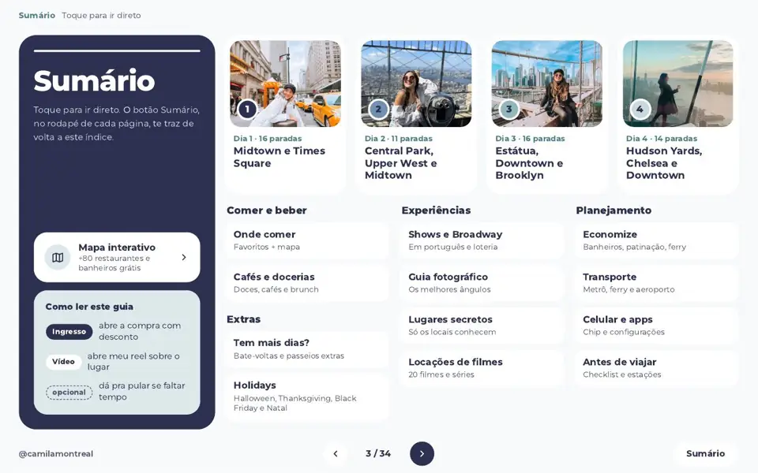
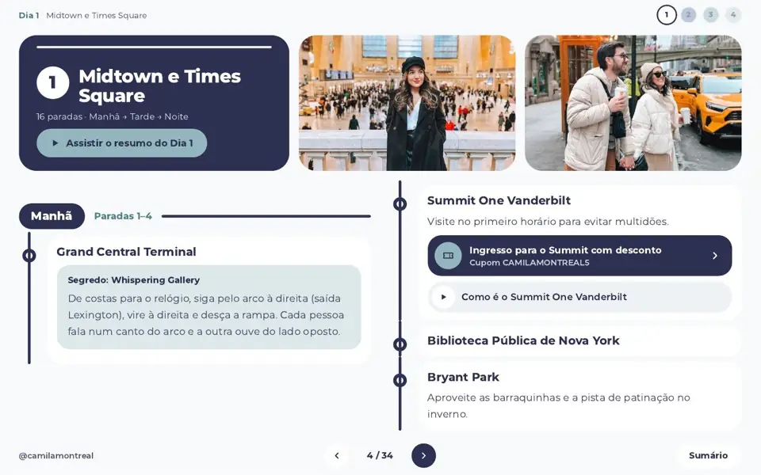
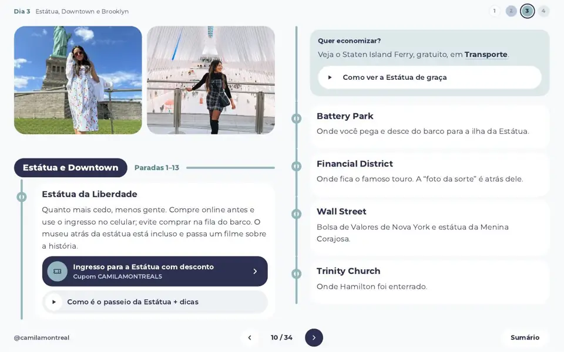

Trem do aeroporto
Eu comprei o bilhete errado, perdi o certo e gastei US$ 200 na primeira hora. O guia manda pesquisar o bilhete exato antes de embarcar.
Próxima estaçãoInício da linha
Eu queropara você aproveitar mais e planejar menos.
Um roteiro de 4 dias, dividido por região, com as minhas dicas, atalhos e links de reserva, tudo em um só guia.
Cada dia do guia é uma linha. Toque na sua e veja por onde ela passa.
57paradas se você fizer todos os dias até aqui. As marcadas como opcionais podem ficar de fora.





Sumário: toque e vá direto para o dia ou a seção que você precisa.


De costas para o relógio, siga pelo arco à direita (saída Lexington), vire à direita e desça a rampa. Cada pessoa fala num canto do arco e a outra ouve do lado oposto.
Roteiro e mapa funcionam offline depois de baixados.
Seis atrasos que eu já enfrentei, para você não pegar.
Eu comprei o bilhete errado, perdi o certo e gastei US$ 200 na primeira hora. O guia manda pesquisar o bilhete exato antes de embarcar.
Sem desembarque na ilha, o Staten Island Ferry é gratuito. O guia diz como chegar e de que lado sentar.
A loteria dá chance de ingressos bem mais baratos, e há áudio-guia e legendas em português para vários musicais.
Antes de pedir, procure promoções na porta. Eu paguei US$ 2 em vez de 4 só perguntando.
Preço de cada pista, e qual delas tem entrada grátis: no Bryant Park você paga só o aluguel dos patins.
É quase impossível achar banheiro público em Nova York. O mapa interativo tem uma aba só com banheiros gratuitos.
Você continua usando as redes. Só não precisa montar tudo sozinha(o).
Leia o sumário, escolha os dias que quer, reserve o que precisa pelos links com desconto, baixe os mapas e configure o celular.
Abra o dia, siga manhã, tarde e noite e pule o que estiver marcado como opcional se faltar tempo.
Há uma versão pensada para a tela do celular, com rolagem vertical. Você pode baixar o PDF e abrir sem internet.

Cami tem 30 anos, já conheceu 27 países e mora no Canadá há quase 3 anos. Já perdeu a conta de quantas vezes foi a Nova York.
Seu amor por novas culturas e sabores faz a Cami explorar ao máximo os destinos e planejar os mínimos detalhes das viagens. É formada em Marketing, pós-graduada em Inteligência Competitiva e Inovação em Marketing, e soma mais de 600 mil seguidores nas redes.
à vista, ou em até 9× de R$ 8,92 (parcelas com juros a partir de 2×). Cartão, Pix, boleto ou PayPal.
Você recebe o link do PDF interativo (versões desktop e celular), o mapa interativo, atualizações gratuitas e reembolso em até 7 dias.
Passar o cartão · R$ 67,90pagamento único, sem mensalidade. Cartão, PayPal ou Klarna.
Você recebe o link do PDF interativo (versões desktop e celular), o mapa interativo, atualizações gratuitas e reembolso em até 7 dias.
Passar o cartão · CAD 21Assim que o pagamento for confirmado, você recebe um e-mail com o link do PDF interativo, com versão para desktop e versão para celular.
O PDF premium com o roteiro dia a dia, o acesso ao mapa interativo e vários links de desconto para ingressos, atividades e experiências.
Sim! O guia foi feito todo em português e tem várias dicas para quem nunca foi ao destino, inclusive dicas culturais, além de dicas para ver musicais em português.
Além de especialidade no destino, o guia não mostra apenas atrações turísticas. Você encontra dicas que poucos turistas conhecem, experiências que poucos turistas fazem, dicas de aplicativos e sites, o que vestir, onde comer e onde tirar as melhores fotos.
Não! Tanto o roteiro quanto o mapa podem ser acessados offline. Menos uma coisa para você se preocupar durante a viagem.
É um menu organizado por região, não uma obrigação. Há paradas marcadas como opcionais e muitas são só uma passada ou uma foto. Você escolhe o ritmo.
Preços e horários em Nova York mudam. O guia recebe atualizações gratuitas pelo mesmo link, e eu recomendo conferir o site oficial antes de comprar ingressos.
São links de reserva de passeios, ingressos e serviços com o meu cupom. Alguns parceiros me pagam uma comissão quando você reserva pelo link, sem custo extra para você.
Você pode pedir o reembolso em até 7 dias. Escreva para o contato que está no rodapé da página.
Sim! Você pode conferir todos os meus roteiros nas minhas redes.
Você já escolheu o destino. Falta só decidir como quer chegar lá: com 30 abas abertas ou com um guia na mão.
Eu quero